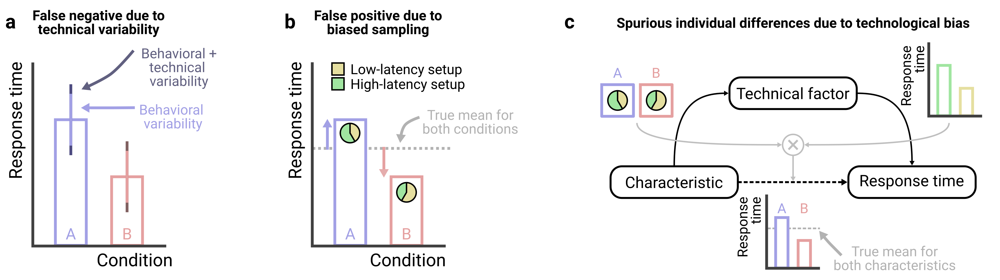
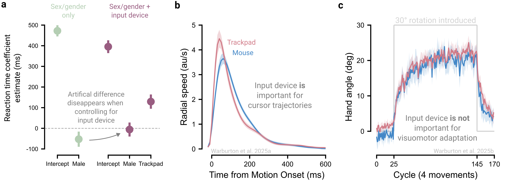

2 Plan for technical variability
A primary concern with online crowdsourcing is the variability participants’ hardware and software. Computers may differ in screen size and resolution, and input devices can range from mice to trackballs to trackpads, each with different characteristics. Although these factors may appear trivial, they can sometimes compromise the ability to address key research questions (Germine, Reinecke, and Chaytor 2019). Below, we outline strategies to account for variability in software and hardware through experimental design and data analysis.
2.1 Combat technical variability through experiment design
Modern computing systems exhibit variability both within a single setup and across different setups. Within a given setup, response times measured via key presses can vary by roughly 30 ms (SDstandard deviation). Across setups, differences in operating systems and browsers can shift mean response times by as much as 80 ms (Anwyl-Irvine et al. 2021; Bridges et al. 2020). Hardware differences can further exacerbate behavioral variability, with reaction times differing by 70 ms across different touchscreen devices (Schatz, Ybarra, and Leitner 2015) and by 130 ms between mouse and trackpad inputs (Warburton et al. 2025a; Watral et al. 2023).
To mitigate technical variability, we recommend the use of within-subject experimental designs where possible. This approach effectively controls for both within- and between-setup variability, since setup-specific noise would evenly impact all conditions.
However, when within-subject designs are infeasible and between-subject designs are required, it becomes especially important to understand the two keys ways in which technical variability can undermine data quality: first, technological variability adds variability around group means and thus reduces statistical power to detect effects of interest (Figure 2.1a); and second, if random participant assignment fails to balance technical variables across conditions, between-subject designs can lead to spurious effects (Figure 2.1b).
Both risks above are especially problematic when technical variability approaches or exceeds natural behavioral variability – for example, adding 35 ms of technical variability to 70 ms of behavioral variability raises a group’s standard deviation to just 78 ms, a negligible effect on group comparisons. In contrast, adding technical variability (70 ms) equal to behavioral variability (70 ms) raises a group’s standard deviation to 99 ms, a distortion that can obscure group differences. Nonetheless, larger sample sizes can help offset these risks, and a priori power analyses can clarify how technical noise affects the inferences drawn (see Box 1).
Studies of individual differences are especially vulnerable to technical variability. For example, if a demographic factor of interest (e.g., sex/gender) is associated with the hardware participants use (e.g., men more often use trackpads; women more often use mice), and these devices differ in response time properties, analyses that ignore this mediating pathway may falsely attribute response-time differences to sex/gender, despite no direct causal link (Figure 2.1c). In principle, one could measure and control for many such variables, but in practice it is difficult to know whether unmeasured factors remain that could undermine the study, making it crucial for researchers to evaluate how seriously potential confounds could threaten their study.
2.2 Standardize hardware and software
Standardizing software and hardware across participants is one of the most effective ways to reduce technical variability. Whenever possible, we recommend researchers restrict participants to those using specific device types (i.e., either computers, tablets, or phones), a feature supported by crowdsourcing platforms such as Prolific, because measures such as simple response times can vary substantially across these device types (Passell et al. 2021). Researchers can also implement code or questionnaires to further restrict participation based on operating system, browser type, input device, and screen refresh rates. However, the benefits of greater experimental control must be weighed against the risk of homogenizing the sample. For example, findings may fail to generalize if a study inadvertently limits their population to tech-savvy participants or those using high-performance devices (Germine, Reinecke, and Chaytor 2019).
2.3 Standardize the experiment
Standardizing experimental stimuli is a powerful way to further reduce unwanted variability. For example, psychophysics studies often require precise control over stimulus size in terms of visual angle, which depends on both the physical size of the stimulus and the participant’s viewing distance. Similarly, motor control studies may need to measure the actual movement distance on a participant’s trackpad.
To standardize stimuli across participants, researchers can implement calibration procedures that exploit an element of universality. For example, the ubiquity and standard size of credit cards enables easily mapping virtual units onto real-world measurements, allowing estimation of on-screen stimulus size (Li et al. 2020; Yung et al. 2015) and trackpad movement distance (Coltman et al. 2021). Similarly, the relatively fixed position of the human eye’s blind spot can be used to standardize viewing distances (Li et al. 2020), and audio calibration procedures can adjust volume to each participant’s setup and hearing ability (Zhao et al. 2022).
However, standardizing experimental stimuli comes with trade-offs. First, calibration procedures can be tedious and frustrating. Moreover, some may be unwilling or unable to use tools like a credit card for calibration (though clear instructions can help mitigate this; § Instruct clearly). Second, device differences limit how much standardization is possible (for instance, stimuli must be sized to remain visible even on the smallest screens), often forcing researchers to impose additional hardware requirements. Third, even with calibration, variability inevitably persists (even in lab studies), so researchers must weigh the benefits of calibration against participant burden and assess how the remaining variability could affect their research question.
2.4 Record technical factors
For technical variables that cannot be controlled, we recommend recording them and accounting for them analytically, for example by including them as covariates in statistical models (more on this in § Collect data comprehensively). For example, although screen refresh rate cannot be controlled and directly determines temporal resolution, it can be measured and modeled during analysis to assess whether it mediates the behavior of interest.
2.5 Pilot the experiment on a range of devices
We recommend piloting studies across the full range of devices participants might use. Are stimuli legible on small screens? Are experiments easily completed using a trackpad or mouse? Systematically testing diverse setups in advance helps detect and prevent systematic errors before launching the experiment.
2.6 The principle in action
We present an example illustrating how input devices can contaminate online studies of individual differences (Figure 2.3a). When considering the effect of sex/gender on reaction times, males appear to be 53 ms quicker to initiate a goal-directed movement than females (Warburton et al. 2025a). However, after including input device (mouse vs trackpad) as a covariate, the sex/gender gap shrinks to 6 ms and is no longer statistically significant. Thus, the apparent sex/gender effect reflects systematic latency differences between devices combined with biased device usage: female participants were more likely to use slower trackpads, whereas male participants more often used faster mice (also see Zhang et al. 2026).
This technological confound extends beyond response times to many behavioral measures. For example, reach velocity profiles differ between devices (Figure 2.3b), posing a concern for mouse-tracking studies that infer latent cognitive processes from these trajectories (Dotan et al. 2019). However, device effects do not penetrate behaviors universally: in visuomotor adaptation, the rate and extent of adaptation are comparable between trackpad and mouse users (Figure 2.3c; Kim, Forrence, and McDougle (2022); Tsay et al. (2021); Tsay et al. (2024); Warburton et al. (2025b)). This contrast underscores the need to identify when technological variability is likely to influence outcomes.
